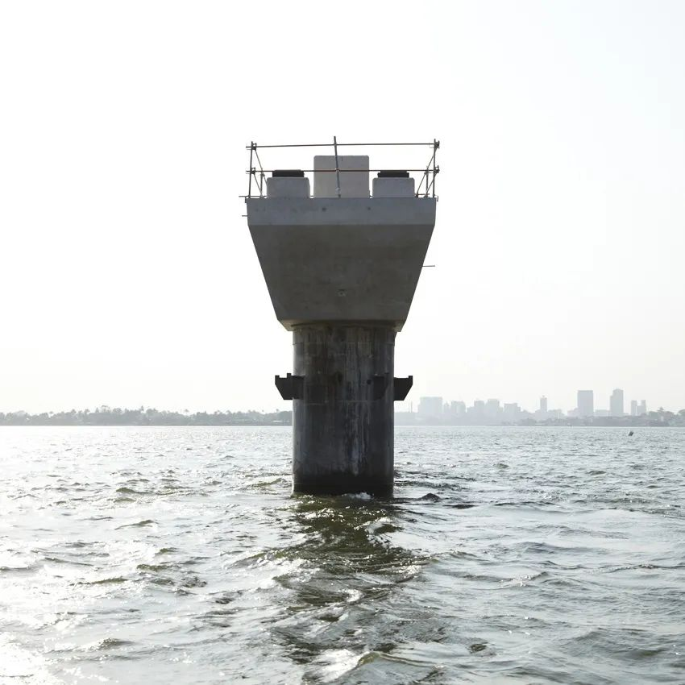

Entre la France et la Côte d'Ivoire, cet artiste d'origine ivoirienne qui a grandi à Lille se confronte au changement, à l'essor économique, aux grands travaux d'urbanisation et surtout aux traces d'une Côte d'Ivoire de l'entre-deux. Pas à pas, François-Xavier Gbré crée son propre paysage à travers une collection de photographies qui révèlent les invisibilités du quotidien.
Le passé dans l'œuvre de François-Xavier Gbré est étranger et inachevé. Liées par une perspective méthodique, souvent distante, sur l'architecture et le paysage dans la forme d'un témoignage documentaire, son travail évoque la photographie d'architecture de Lewis Baltz, Stephen Shore et Guy Tillim.
Du Mali à Israël, de Lille à Rabat, il photographie des architectures à l'abandon portant en elles les traces de l'histoire sociale et politique de leur pays. Les photographies de François-Xavier Gbré posent un regard distancié sur les bâtiments et la charge symbolique que leur confèrent les peuples.
Avec sa série Tracks , débutée en 2009, François-Xavier Gbré réalise un travail d'archivage des édifices et espaces publics oubliés et sur la résilience de l'architecture. Dans ses séries sur l'urbanisation du nouvel Abidjan ou du complexe résidentiel Eko Atlantic au Nigeria, il continue à interroger, cliché après cliché, son propre monde en mutation. Dans une douce radicalité, il témoigne de l'entre-deux, de ces instants de basculement révélés avec force par l'architecture.
Expositions à la galerie